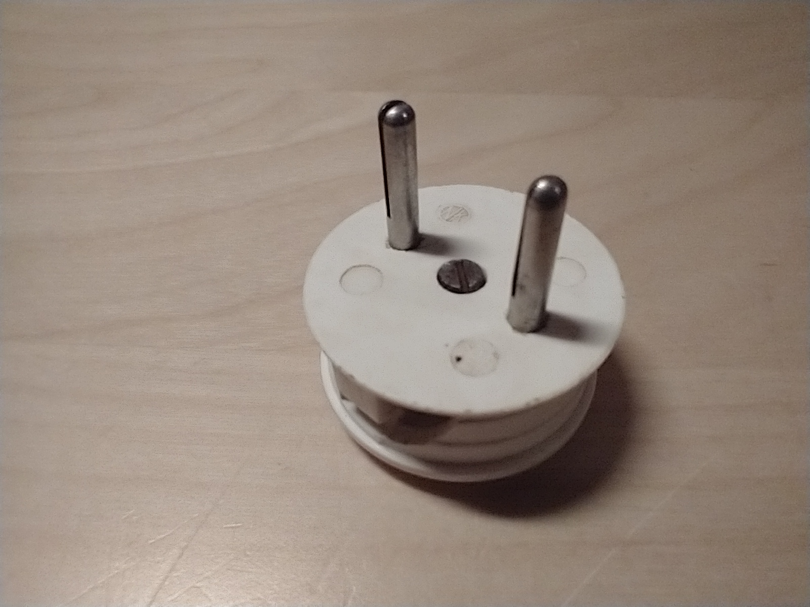
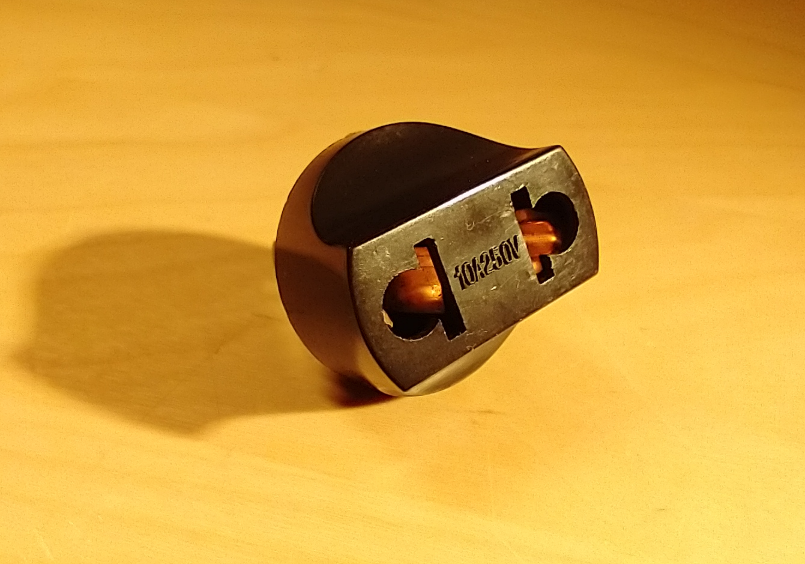
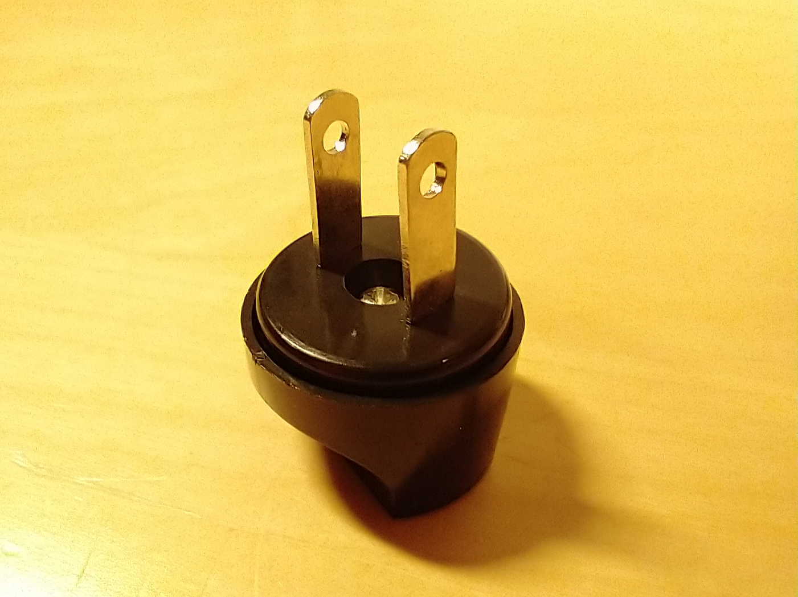
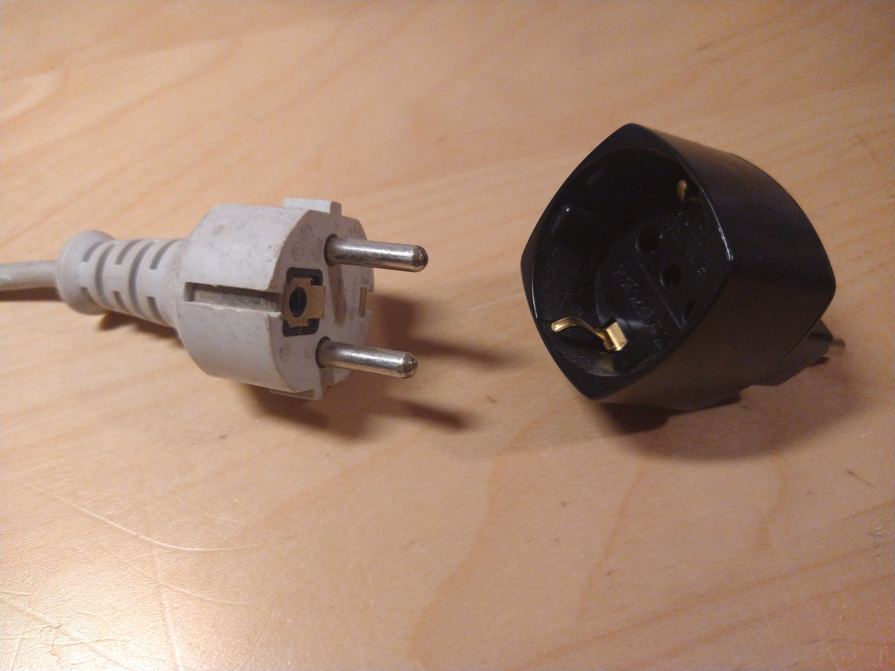

Random electrical things
This is the "collection" of random electrical equipment I have. Most of it isn't noteworthy (it's just ordinary boring power strips, adaptors and some rewireable plugs which I bought to replace old unsafe ones, so it's all normal things you'll find in every home), but there are some (somewhat) interesting things to talk about, and this is the page where I'm gonna talk about those kinds of things :)
Electrical things from Italy:
I live in Italy, which means that devices powered by electricity use different plugs, because of complicated history reasons that I'd like to document in more detail one of these days. This means that sometimes adaptors are required to connect appliances to power outlets or power strips, and it can be quite annoying if you don't have the right adaptor.
Old stuff:
This is an old plug that was connected to a tube radio from the 50s (it was probably the plug that originally came with that radio). It has since been replaced with something more modern (and much safer!), but I kept it in my drawer because it's fairly interesting to look at, the design and shape of it is completely different from the more modern plugs you can buy today.
{kind=link}

This is an old (10A type-L) socket from the 50s.
Being from te 50s, it is very likely that it would have been originally connected to a 127V (or sometimes 150V) lighting
circuit, which would have been metered separately (at a cheaper rate) compared to the sockets used for the appliances.
Of course nowadays this socket is connected to 230V just like all the other sockets in that house.
Something interesting about that specific socket is that it seems to have a round recessed area around the pins, which
almost makes it look like it'd accept Shucko plugs (of course it doesn't).
I'm sure it'd look really nice with the round plug I showed above, though!
This specific characteristic seems to be only present in that specific socket, all the other ones in that house have
their holes flat with the cover of the socket, like you'd expect.
{kind=link}
New(er) stuff:
These are some newer rewireable plugs (I keep a few in my drawer in case I need to replace the ones on old electrical equipment,
things like tube radios etc.), not really noteworthy on their own, but it's interesting to compare them to the plug from
the 50s showed in the previous pictures (escpecially for people who aren't familiar with how Italian plugs look like).
The plugs in the first picture are all 10A type-L (Italian) plugs, some of them with a ground pin and some of them without
it, whereas the plug shown in the second picture is of the 16A type, which is slightly more uncommon but it's definitely
not rare, they're generally used on power strips.
I don't have any rewireable Shucko plugs to show here, otherwise I'd
post a picture of one of them too, but if you're really interested in them I'm sure you can find some pictures online.
{kind=link}
{kind=link}
{kind=link}
Dangerous travel adaptors:
Dangerous travel adaptors have been documented extensively by other people, but here's some of the ones I have:
This one is probably the worst; it converts a variety of 2-pin plugs into a North American plug, but it has a lot of safety issues: there are no safety shutters at all on this adaptor, a feature which even the cheapest travel adaptor seems to have these days, which means that it's very easy for anyone to stick metal objects into the live connections. And if that wasn't enough, it's incredibly easy to plug only one of the pins of a plug into it, leaving the other pin, now live, exposed and presenting a shock hazard.
 {kind=link}
{kind=link}
Useful tips for people travelling to Italy:
(Obviously this isn't really the time to travel right now, but these tips might be useful once people can travel safely once again)
First of all, let's start with the obvious thing: if you're coming from a country that uses 120 (or 100) volts, you need to be sure that the devices you want to connect over here can also run on 230V. This is practically guaranteed to be the case for things like phone and laptop chargers, but you won't be able to use hairdryers designed for 120V over here, so make sure the place you're staying in will have one that you can use.
If you're coming here from a place that uses Shucko plugs and sockets (like Germany) then you're lucky, because your phone charger will likely use a Europlug, and that is also what we use over here. However, you may need to get an adaptor to use Shucko devices over here, since most houses don't use Shucko sockets... this is also what people living here need to do to plug things like computers and washing machines into the wall, because Shucko plugs are incredibly common, but Shucko sockets are less common, except on things like power strips, where they're fairly common because people want to plug in the things they bought (incredible, I know).
Anyways, here's what one of the Shucko to 16A type-L adaptors looks like:
{kind=link}
You might also find 10A Shucko to type-L adaptors, and these will most likely work fine for most things with the added benefit of being able to plug them into 10A type-L sockets, which are a bit more common than 16A ones (not that 16A ones are rare, but with a 16A converter you have to use a 16A socket, whereas with a 10A one you can use either a 10A or a 16A socket) but if you want to plug in a hairdryer then it's a good idea to use a 16A one, since the Shucko plugs and sockets are also rated to 16A and heavier loads like hairdryers could overload a 10A plug.
If you're coming here from a country that doesn't use Shucko plugs, then you'll have to get a travel adaptor. Now, this is where it gets scary, because travel adaptors are generally not known to be all that great, so it's probably a good idea to search a bit for one that looks secure. Ideally you'd want one whose socket part ONLY accepts plugs from the country you're coming from, but those are a bit harder to find.
Additionally, you should look for adaptors with protective sleeving on the pins - all modern Italian plugs have them and they're a really important safety feature, so make sure the one you're buying has that (I've seen quite a few of them that don't have any sleeving).